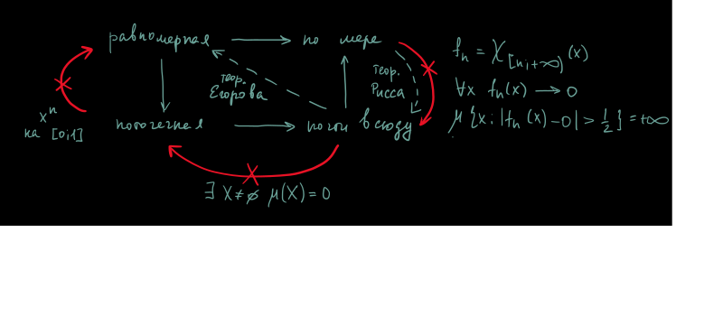
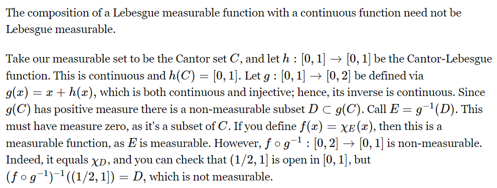

теорема Егорова и теорема Рисса
Утверждение: Пуcть \(f_n \to f\) по мере.
Тогда \(f_n \to g \iff f \sim g\) (то есть \(f = g\) почти всюду).
Доказательство:
\(\boxed{\Longrightarrow}\) \(\mu\{x: f(x)\ne g(x)\} \leqslant \displaystyle \sum_{k = 1}^{\infty}\mu\{x: \,\,\,\, |f(x) - g(x)| > \frac1k\} \leqslant \displaystyle \sum_{k = 1}^{\infty}0\), так как:
\(\forall k \,\,\,\, \{x: \,\,\,\, |f(x) - g(x)| > \frac1k\} \subset \underbrace{\{x: \,\,\,\, |f(x) - f_n(x)| > \frac1{2k}\}}_{\mu \to 0} \cup \underbrace{\{x: \,\,\,\, |g(x) - f_n(x)| > \frac1{2k}}_{\mu \to 0}\} \,\,\,\,\blacksquare\)
Утверждение: \(f_n \to f\) по мере и \(g_n \to g\) по мере \(\implies f_n + g_n \to f + g\) по мере и \(\alpha f_n \to \alpha f\) по мере.
Доказательство:
\(\{x: \,\,\,\,|f_n(x) + g_n(x) - (f(x) + g(x))| > \sigma\} \subset \{x: \,\,\,\,|f_n(x) - f(x)| > \frac{\sigma}2\} \cup \{x: \,\,\,\,|g_n(x)- g(x)| > \frac{\sigma}2\} \,\,\,\,\blacksquare\)
Утверждение: Если \(\mu X < \infty \,\,\,\, f_n \to f\) по мере, \(g_n \to g\) по мере, то \(f_n\cdot g_n \to f\cdot g\) по мере.
Доказательство: В силу \(f\cdot g = \frac12((f + g)^2 - f^2 - g^2)\) достаточно доказать для \(f^2\). Далее примерно как в предыдущих двух утверждениях \(\,\,\,\,\blacksquare\)
Задача: \((1)\) Если \(f\) измерима и \(\forall x \,\,\,\, f(x)\ne 0\), то \(\frac1{f(x)}\) измерима.
Доказательство: \(\frac1{x}\) доопределенная в нуле нулем измерима, так как прообраз любого \((c, +\infty)\) – борелевское множество (понятно по графику) \(\,\,\,\,\blacksquare\)
Задача: \((2)\) Построить измеримую \(f\) и непрерывную \(g\), такие что \(f(g)\) неизмерима.
Доказательство:

Задача: \((3)\) Пример \(f_n \to f\), такой, что \(f_n^2 \not\to f^2\) по мере.
Доказательство: \(f(x) = \max\{0, x\}, \,\,\,\, f_n(x) = f + \frac1n, \,\,\,\, f^2 - f_n^2 = \frac{2x}n - \frac1{n^2} \,\,\,\,\blacksquare\)
Задача: \((4)\) Доказать, что на множестве классов эквивалентных функций на отрезке с классической мерой не существует метрики, сходимость по которой совпадает со сходимостью почти всюду.
Доказательство: Пусть существует такая топология с метрикой \(\rho\). \(f_n\) последовательность, сходящаяся к нулю по мере, но не почти всюду (см. табличку выше).
Для метрики это значит, что \(\exists \varepsilon > 0: \,\,\,\, \forall N \,\,\,\, \exists n > N: \,\,\,\, \rho(f_n, 0) \geqslant \varepsilon\), то есть существует последовательность \(\{n_k\}\), такая, что \(f_{n_k}\) не лежат в окрестности \(0\). \(f_{n_k}\) сходится к нулю по мере, поэтому по теореме Рисса существует его подпоследовательность, сходящаяся почти всюду, а значит существует подпоследовательность \(n_{k_l}\), такая, что $f_{n_{k_l}} лежат в окрестности нуля. Противоречие \(\,\,\,\,\blacksquare\)
Утверждение: (\(C\)-свойство Лузина) Пусть \(\mu\) классическая мера на \((0, 1]\), \(f\) измерима на \([0, 1]\). Тогда \(\forall \varepsilon > 0 \,\,\,\, \exists g_{\varepsilon} \in C([0, 1]): \,\,\,\, \mu\{x: \,\,\,\,g_{\varepsilon}(x) \ne f(x)\} < \varepsilon\).
Доказательство:
Задача: \((5)\) Вывести из \(C\)-свойства Лузина утверждение для прямой \(\mathbb{R}\).
Доказательство: \(\mathbb{R} = \displaystyle\bigcup_{n \in \{\ldots, -1, 0, 1, \ldots\}}^{\infty}[n, n + 1]\). По \(C\)-свойству существуют \(g_n(x) \in C([n, n + 1]): \,\,\,\, \mu\{x\in [n , n+1]: \,\,\,\, f(x)\ne g_n(x)\} < \frac{\varepsilon}{2^{|n| + 1}}\). Далее на каждом отрезке немного \(\delta\) отступим с двух концов отрезка и соединим \(g_n(x)\) с нулем с двух сторон. Получим новые функции \(h(x)\) их объединение будет непрерывной функцией, а мера точек, где что-то поменяли \(\leqslant 2\displaystyle \sum_{n = 1}^{\infty}2\delta\cdot \frac{\varepsilon}{2^{n + 1}} < 2\delta \varepsilon \,\,\,\,\blacksquare\)